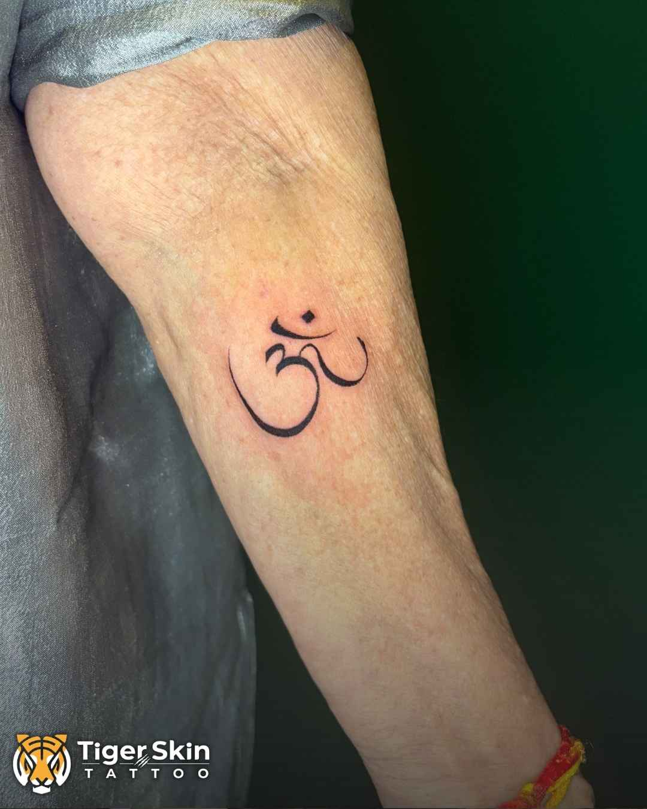

Ajoba holding Mai's hand in the studio. That look on his face stopped everything.
I've tattooed over 2,000 people. I thought I'd seen every version of this moment. Then Mai walked in.
Vedashree has been my client for years. Six tattoos. Her mother too. She messaged one day saying she wanted to bring someone special in. I assumed a friend. Maybe a cousin.
She showed up with her 80-year-old grandmother and her 86-year-old grandfather.
They walked into the studio in Naupada like it was a place they'd been coming to their whole lives. No hesitation. No nerves. Just two people who've lived through things most of us haven't imagined, completely at ease in a tattoo studio. Completely at ease with each other.
I was the nervous one.
I asked Mai what she wanted. She didn't pause. Didn't pull out her phone to scroll for references. Didn't say "I'm not sure yet" or "let me think about it."
Om, she said.
Of course. No second-guessing. No performance. She knew exactly what she believed in and exactly what was worth marking on her body forever. I drew it. She looked at it for two seconds, nodded once, and sat down.
That's when I started spiralling.
She's 80. What if the pain is too much? What if her skin reacts differently? What if she needs to stop halfway? I was running through every scenario. My hands were steady, they always are, but my mind wasn't. I looked over at Vedashree. She was completely calm. Like she already knew exactly how this would go.
She did.
Mai sat through the entire session with Vedashree on one side and Ajoba on the other. She did not wince. She did not ask for a break. She did not grip the chair.
She laughed.
Not polite laughter. Not the kind you do to cover up pain. Real, full, belly laughter, like she was having the best afternoon of her year. Meanwhile I'm tattooing with complete focus and also trying not to completely lose it. Ajoba sat right beside her with this expression I still can't fully describe. The kind that only comes from 50+ years of watching someone you love just be themselves. Vedashree was blinking too much. I was doing the same.

Mai's Om. Clean, precise, permanent. Exactly what she asked for, nothing more, nothing less.
When it was done, Ajoba reached over and held her hand. They both looked at me at the same time. And without planning it, without rehearsing it, they said it together, in Marathi, soft and steady:
"Tumhch sagl changlch honar ahe. Just keep doing the good work." — Mai and Ajoba, Tiger Skin Tattoos, Naupada, Thane
Everything good will happen for you. Keep doing what you're doing.
I've won national tattoo convention awards. I've built a studio I'm proud of from nothing. I've done pieces I never thought I was capable of when I first picked up a machine. But I have never, not once in 8 years, felt what I felt in that room at that moment. It wasn't about the tattoo. It was about what it meant that they were there at all, together, unhurried, completely sure of themselves, and that they turned to us on the way out and gave us that blessing.
Here's what I keep coming back to: Mai didn't do this for anyone else. Not for a trend. Not for a reel. Not to impress anyone. She was 80 years old and she quietly, clearly decided to do something for herself. Something that reflected what she actually believes in. She walked in knowing exactly what she wanted, sat down, didn't complain once, and walked out with something on her skin that will be there for the rest of her life.
The most fearless person I have ever tattooed. And she's 80.
I think about that session a lot. Not the view count. Not the reel.
I think about the studio going quiet when they said those words. Four people in a small room in Naupada, Thane, all feeling the same thing, none of us able to say it out loud.
Changlch honar ahe.
It will be good. She said it like she'd known it her whole life and was just reminding us.
Have a story you've been carrying?
Every tattoo at Tiger Skin starts with a conversation, not a catalogue. Consultation is always free.
Call the Studio WhatsApp Us